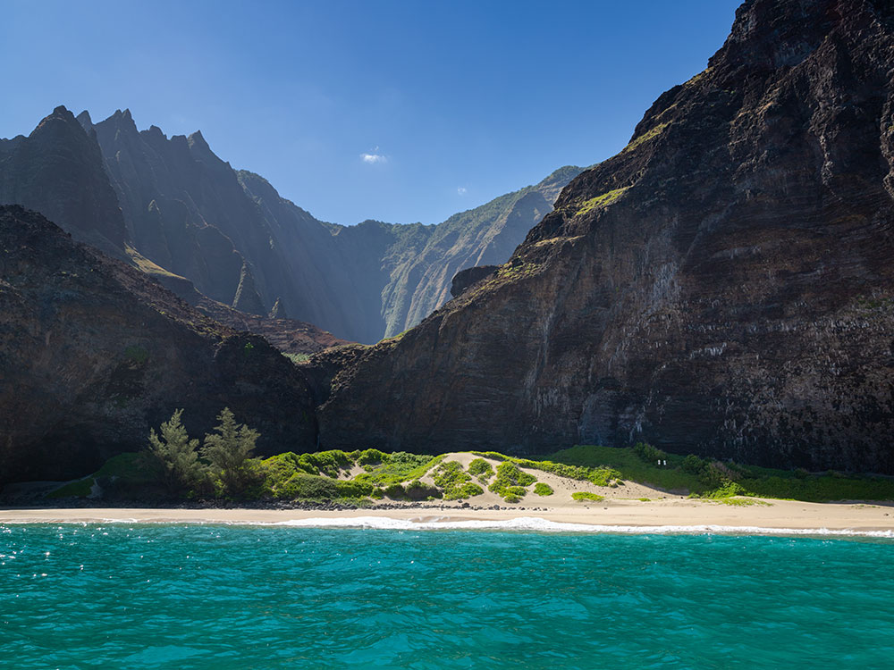
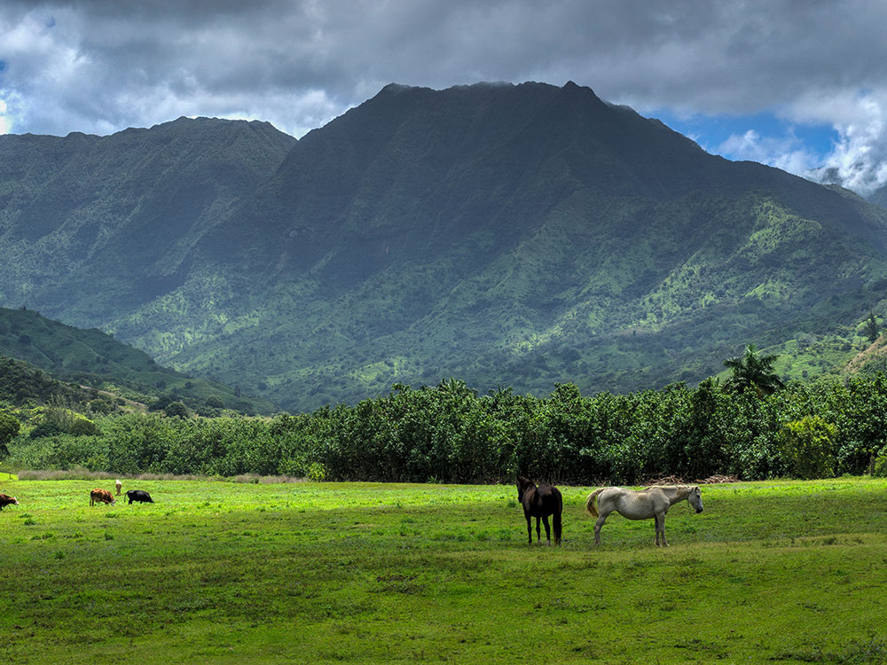
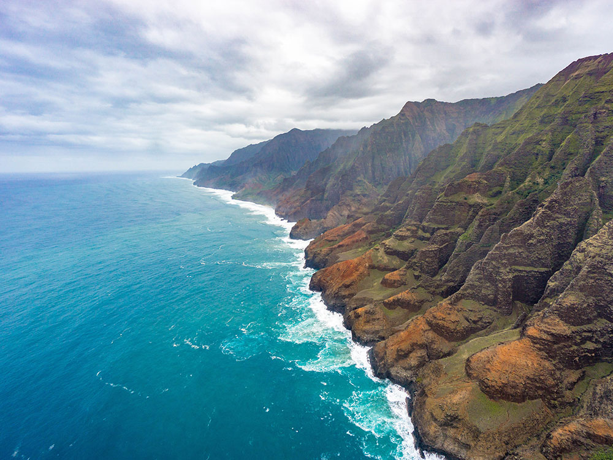
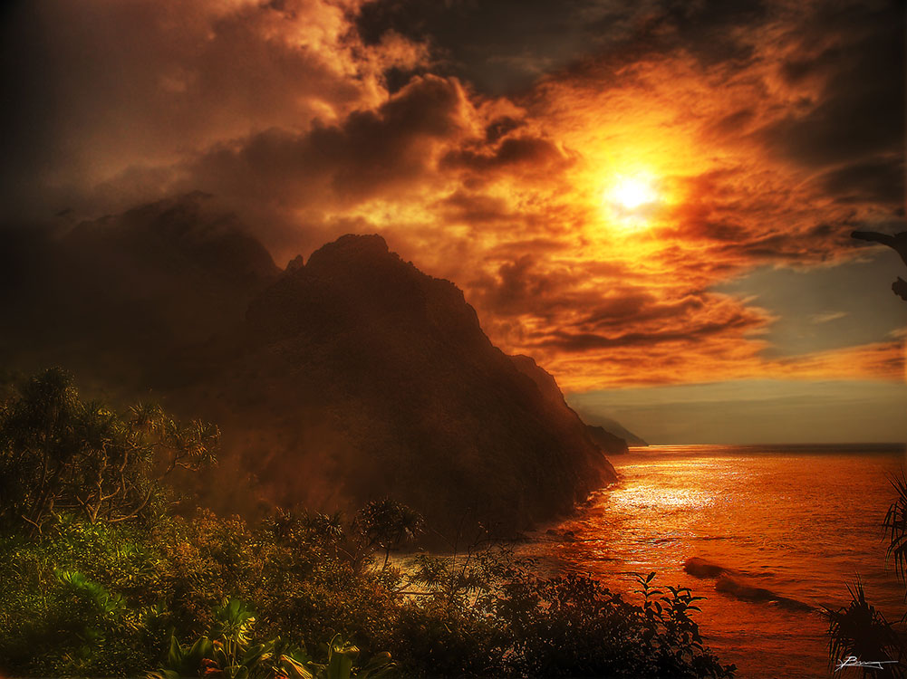

.jpg){kind=link}
Sixteen-mile stretch of towering sea cliffs, lush valleys, and cascading waterfalls accessible only by boat, air, or rugged hiking trail.
General Information
7:00am to 6:45pm (winter)
Camping allowed with permit only
Parking: $10 per vehicle (non-residents)
Camping: $25–$35 per night depending on residency
Reservations required for all access
How to Get There
From Lihue (42 mi): Take HI-56 N to HI-560 W, continue to the end of the road at Hāʻena State Park; access is via Kalalau Trail or permitted boat/kayak tours.
Overview
Nā Pali Coast State Wilderness Park protects 16 miles of the most dramatic coastline in Hawaiʻi, on the northwest shore of Kauaʻi, where fluted green sea cliffs rise up to 4,000 feet from the Pacific. Deep valleys such as Hanakāpīʻai, Hanakoa, Kalalau and Honopū cut into the cliffs, and ancient Hawaiian communities once lived in them. The area has no roads, and its remoteness and beauty have made it one of the most photographed places in the islands. People come to hike the Kalalau Trail, to take boat and helicopter tours, to kayak in summer and to see sea caves, waterfalls and remote beaches.
Access
The Nā Pali Coast has no road access, and the options for seeing it are by foot, by boat or by air. The Kalalau Trail begins at Keʻe Beach at the end of Highway 560 in Hāʻena State Park, about 40 miles from Līhuʻe, and non-resident visitors need advance reservations for park entry and parking. Boat tours leave from Port Allen on the south and west side and from Hanalei Bay in summer, and helicopter tours depart from Līhuʻe. Kayaking is possible in summer with permits.
Seasons
The park is open year-round, but conditions change a lot with the season. Summer, from about May through September, brings the calmest seas and is the best time for boat tours and kayaking. Winter brings large swells and dangerous surf, and many boat tours are canceled, while trails can be wet and muddy. The Kalalau Trail can be closed after heavy rain or when streams flood, particularly at the Hanakāpīʻai crossing, and hikers need permits for overnight camping beyond Hanakāpīʻai. Check conditions and closures before you go.
Things to Do
See One of the World's Great Coastlines
Nā Pali Coast State Wilderness Park is a landscape of tall green cliffs, waterfalls and hidden valleys. The scale and beauty of the coast are best understood from the water, from the air or from the trail.
Hike the Kalalau Trail
The famous Kalalau Trail runs 11 miles along the coast to Kalalau Beach. Day hikers can walk the first 2 miles to Hanakāpīʻai Beach or continue 2 miles inland to Hanakāpīʻai Falls.
Take a Boat Tour
Boat tours go along the coast, passing sea caves, waterfalls and views of the cliffs, and may stop for snorkeling or whale watching. Summer trips from Port Allen or Hanalei offer calm conditions.
Fly Over by Helicopter
Helicopter tours from Līhuʻe offer the best views of the interior valleys and the full length of the cliffs. They are a popular and memorable way to see areas inaccessible to most visitors.
Kayak the Coast in Summer
Experienced paddlers can kayak the coast in the calm season with permits from the state. The trip passes sea caves and beaches that are visible only from the water.
Top Trails
Kalalau Trail to Hanakāpīʻai Beach
Length: Approximately 4 miles round trip
Elevation Gain: Approximately 800 feet
Difficulty: Moderate
This first section of the Kalalau Trail climbs and descends across ridges and valleys with ocean views to Hanakāpīʻai Beach. It is rocky, muddy and slippery at times, and the beach has dangerous currents, so do not swim.
Hanakāpīʻai Falls Trail
Length: Approximately 8 miles round trip
Elevation Gain: Approximately 1,200 feet
Difficulty: Strenuous
This longer trail extends from Hanakāpīʻai Beach inland along a stream to a tall waterfall. It requires several stream crossings that can be dangerous after rain, so check the weather.
Kalalau Trail to Kalalau Beach
Length: Approximately 22 miles round trip
Elevation Gain: Approximately 5,000 feet cumulative
Difficulty: Strenuous
The full trail is a challenging backpacking trip that passes through hanging valleys to the remote Kalalau Beach. A camping permit is required, and hikers should be experienced, prepared and aware of changing conditions.
Visitor Centers
Nā Pali Coast State Wilderness Park does not have a visitor center within the wilderness. At the trailhead in Hāʻena State Park, a check-in area has staff, restrooms and information about reservations, safety and the trail, and the Hawaiʻi State Parks website has current permit and reservation details. Tour operators in Hanalei, Port Allen and Līhuʻe can provide information for boat and helicopter excursions.
Camping and Lodging
Camping within the park is by permit only and is mainly at Hanakoa and Kalalau along the trail, with limits on the number of nights and campers. Outside the wilderness, camping is available at county parks like Hāʻena Beach Park, Anini Beach and Hanalei. For lodging, the North Shore resort of Princeville, about 20 to 30 minutes away, has the 1 Hotel Hanalei Bay and St. Regis Princeville Resort, and Hanalei has vacation rentals and inns. On the south shore, Poipu, about an hour and a half away, has the Grand Hyatt Kauai Resort and Sheraton Kauai Resort, and Līhuʻe and Kapaʻa, about an hour away, have chain hotels such as the Royal Sonesta Kauai Resort Lihue and Courtyard Kauai at Coconut Beach. Check each property's website for current availability.
This article uses material from the Wikipedia article and official pages for Nā Pali Coast State Wilderness Park, Hawaii State Parks: Nā Pali Coast State Wilderness Park, released under the Creative Commons Attribution-Share-Alike License 3.0.

.jpg){kind=link}

.jpg){kind=link}

.jpg){kind=link}
